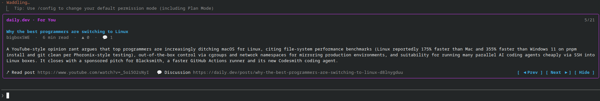

/plugin install dailydev-feed
Read
daily.dev
while Claude works
Your For You feed, one post per prompt, right above the Claude Code prompt.
~/my-project — claude

Community plugin · not affiliated with daily.dev or Anthropic